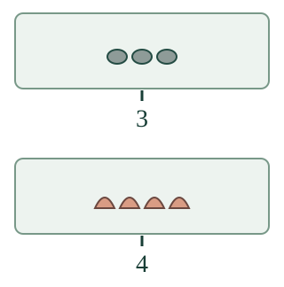

<link rel="stylesheet" href="lesson.css">


<section data-teaching-step="1" data-lesson-role="teaching-step">
<p class="lesson-intro"> Aava tarvitsee rasioihin numerolaput.</p>
<h2>Määrälle numerolappu</h2><p><strong>Yhdistän määrän numeromerkintään.</strong></p>
<p>Tässä on kolme kiveä. Lappu <strong>3</strong> kertoo koko määrän. Toisessa rasiassa on neljä simpukkaa. Siihen kuuluu <strong>4</strong>.</p>
<figure data-lesson-role="worked-example"><figcaption>Numerosta voi myös tehdä määrän: lapussa on 3, joten rasiaan tulee kolme. Sitten lopetetaan.</figcaption></figure>
</section>


<section data-teaching-step="2" data-lesson-role="teaching-step">
<p data-lesson-role="question"><strong>Mieti:</strong> jos kivet siirretään kauemmas, vaihtuuko numerolappu? </p><details data-lesson-role="answer"><summary>Paljasta ajatus</summary><p>Pelkkä siirtäminen ei muuta määrää.</p></details>
</section>


<section data-teaching-step="3" data-lesson-role="teaching-step">
<h3>Rakenna parit</h3><p>Valitse kummallekin kuvalle sopiva numerolappu. Saat vastata heti tai laskea. Kokeile sitten <strong>Korjaa laput</strong> ja <strong>Uusi tilanne</strong>.</p>
<div data-qty-lab><p>Ilman harjoitusta: tee kolmen ja neljän esineen joukot. Liitä numerolaput 3 ja 4. Korjaa tarkoituksella väärään paikkaan laitettu lappu.</p></div>
<details data-lesson-role="hint"><summary>Apua</summary><p>Voit laskea jokaisen esineen kerran. Viimeinen lukusana kertoo koko määrän. Jos tiedät määrän heti, saat vastata suoraan. Aikuinen voi lukea ohjeet ja sanat.</p></details>
</section>


<section data-teaching-step="4" data-lesson-role="teaching-step">
<details data-lesson-role="worked-example"><summary>Kokeile lisää ilman ruutua</summary><p>Tee kaksi erilaista neljän esineen joukkoa. Liitä kumpaankin samaa määrää tarkoittava lappu. Siirrä esineet uuteen järjestykseen. Tarvitaanko uusi lappu? Voit osoittaa vastauksesi.</p></details>
</section>


<details data-lesson-role="teacher-note"><summary>Aikuiselle: tavoite ja rajat</summary><p>Vuosiluokat 1–2. Vaadittu esitieto on M-NUM-02, kardinaliteetti. Kuvan määrä ja numerolappu yhdistetään tässä. M-NUM-WORD-NUMERAL ei ole uusi pakollinen portti; tarvittavat merkitykset mallinnetaan. Kirjaamista tai puheen vahvistamista ei vaadita.</p><p>Päätehtävä rakentaa kaksi vastaavuutta ja tarjoaa korjauksen sekä siirron kahteen erilaiseen yhtä suureen joukkoon. Samaa lappuarvoa saa käyttää molemmille. Valinnainen numerosta määräksi -tehtävä hyväksyy mitkä tahansa kolme eri kiveä; tämä valinta on itse rakentamistehtävä, ei suoran määrävasteen napautusportti. Laskumalli ei muuta tarkistettua parivastausta. Valmis pari ei osoita numeron käsin kirjoitusta, pysyvää tai itsenäistä hallintaa. Fyysinen antamistehtävä on aikuisen kanssa kokeiltava erikseen. Henkilöhistoriaa ei tallenneta.</p></details>


<section data-teaching-step="5" data-lesson-role="teaching-step">
<p data-lesson-role="question"><strong>Lopuksi:</strong> miten tarkistat, sopiiko numerolappu rasian koko määrään?</p>
</section>


